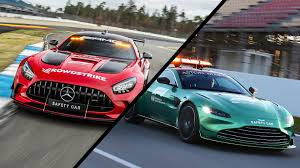

Formula One originated from the World Manufacturers' Championship (1925–1930) and European Drivers' Championship (1931–1939). The formula is a set of rules that all participants' cars must follow.
Formula One was a formula agreed upon in 1946 to officially become effective in 1947.
The first Grand Prix in accordance with the new regulations was the 1946 Turin Grand Prix, anticipating the formula's official start.
Before World War II, a number of Grand Prix racing organisations made suggestions for a new championship to replace the European Championship, but due to the suspension of racing during the conflict, the new International Formula for cars did not become formalised until 1946, to become effective in 1947. The new World Championship was instituted to commence in 1950.
The first world championship race, the 1950 British Grand Prix, took place at Silverstone Circuit in the United Kingdom on 13 May 1950. Giuseppe Farina, competing for Alfa Romeo, won the first Drivers' World Championship, narrowly defeating his teammate Juan Manuel Fangio.
Fangio won the championship in 1951, 1954, 1955, 1956, and 1957. This set the record for the most World Championships won by a single driver, a record that stood for 46 years until Michael Schumacher won his sixth championship in 2003.
1st-25
2nd-18
3rd-15
4th-12
5th-10
6th-8
7th-6
8th-4
9th-2
10th-1
FL*-1
Formula One races must be held on grade one tracks, the highest grade-rating issued by the FIA for tracks.
The layout and lap distance of each circuit can vary significantly as long as they stay within the FIA's regulations.
In most cases, the tracks run in a clockwise direction, although there are a handful of tracks in the Championship that run anticlockwise.
A typical circuit features a stretch of straight road on which the starting grid is situated, with the pi t lane normally located right next to it.
The pit lane is home to each team's garage, where cars are stored and serviced before a race. During a pit stop, drivers enter the pit lane to change their tyres, receive repairs or aerodynamic adjustments from their pit crew, or retire from the race (if the car is in a condition to do so).
Prior to the 2010 season, pit stops also facilitated mid-race refueling of the cars.
Special pit roads and track markings help to make sure drivers pit and rejoin the track safely.
Most of the circuits currently in use are specially constructed for competition, but the calendar also features several circuits that use converted public streets to varying degrees.
These tracks include Monaco, Melbourne, Singapore, Baku, Miami, Jeddah, and Las Vegas. Three-time World champion Nelson Piquet famously described racing in Monaco as "like riding a bicycle around your living room".The Monaco Grand Prix holds a unique exception to the FIA's minimum race distance requirement—the Grand Prix only needs to last enough laps to cover a distance of 260km, versus the standard 305km.
A Formula One Grand Prix event spans a weekend. It typically begins with two free practice sessions on Friday, and one free practice session on Saturday. Additional drivers (commonly known as third drivers) are allowed to run on Fridays, but only two cars may be used per team, requiring a race driver to give up their seat. A qualifying session is held after the last free practice session. This session determines the starting order for the race on Sunday
The race begins with a warm-up lap, after which the cars assemble on the starting grid in the order they qualified. This lap is often referred to as the formation lap, as the cars lap in formation with no overtaking (although a driver who makes a mistake may regain lost ground). The warm-up lap allows drivers to check the condition of the track and their car, gives the tyres a chance to warm up to increase traction and grip, and also gives the pit crews time to clear themselves and their equipment from the grid for the race start.
Once all the cars have formed on the grid, after the medical car positions itself behind the pack,a light system above the track indicates the start of the race: five red lights are illuminated at intervals of one second; they are all then extinguished simultaneously after an unspecified time (typically less than 3 seconds) to signal the start of the race.
The start procedure may be abandoned if a driver stalls on the grid or on the track in an unsafe position, signalled by raising their arm. If this happens, the procedure restarts: a new formation lap begins with the offending car removed from the grid.
The race may also be restarted in the event of a serious accident or dangerous conditions, with the original start voided.
The race may be started from behind the Safety Car if race control feels a racing start would be excessively dangerous, such as extremely heavy rainfall.
In the event of an incident that risks the safety of competitors or trackside race marshals, race officials may choose to deploy the safety car. This in effect suspends the race, with drivers following the safety car around the track at its speed in race order, with overtaking not permitted. Cars that have been lapped may, during the safety car period and depending on circumstances permitted by the race director, be allowed to un-lap themselves in order to ensure a smoother restart and to avoid blue flags being immediately thrown upon the resumption of the race with many of the cars in very close proximity to each other. The safety car circulates until the danger is cleared; after it comes in, the race restarts with a "rolling start". Pit stops under a safety car are permitted, and in many cases can offer a great advantage to teams who are able to pit and change tyres before the safety car period ends. On the lap in which the safety car returns to the pits, the leading car takes over the role of the safety car until the timing line. After crossing this line, drivers are allowed to start racing for track position once more. Mercedes-Benz has supplied a variety of its Mercedes-AMG models to Formula One to use as the safety car since 1996. From 2021 onwards, Aston Martin has supplied the Vantage share duties with Mercedes-AMGs.
Charles Marc Hervé Perceval Leclerc (born 16 October 1997) is a Monégasque racing driver, currently competing in Formula One for Ferrari. Leclerc was runner-up in the Formula One World Drivers' Championship in 2022 with Ferrari, and has won eight Grands Prix across seven seasons.
Born and raised in Monte Carlo, Leclerc began competitive kart racing aged seven. After a successful karting career—culminating in his victory at the junior direct-drive Karting World Cup in 2011—Leclerc graduated to junior formulae. He won his first championship at the 2016 GP3 Series with ART. Leclerc then won the inaugural FIA Formula 2 Championship in 2017 with Prema, becoming the fourth driver to win the GP2/Formula 2 championship in their rookie season.